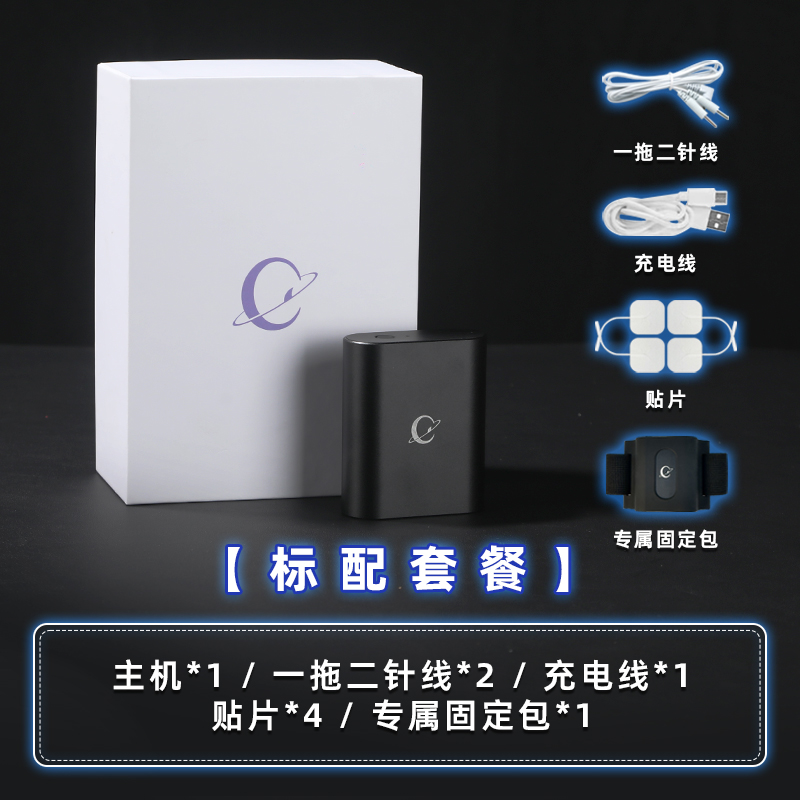

嫣敏🍥
@yanmin1105
RT @chastitybeltsex: 可曾听说过[睡眠剥夺]？
这是非常折磨人的玩法呢😋
在昏昏欲睡时的突然刺激，一下子把人惊醒，被迫保持清醒。
随时间流逝筋疲力竭却无法休息，最后濒临崩溃，再怎么嘴硬、调皮捣蛋的sub，都会对主人哀嚎求饶，燃尽逆反的心~😭
想试试吗？想…

役次元
@chastitybeltsex
可曾听说过[睡眠剥夺]？
这是非常折磨人的玩法呢😋
在昏昏欲睡时的突然刺激，一下子把人惊醒，被迫保持清醒。
随时间流逝筋疲力竭却无法休息，最后濒临崩溃，再怎么嘴硬、调皮捣蛋的sub，都会对主人哀嚎求饶，燃尽逆反的心~😭
想试试吗？想体验吗？
根本不需要多复杂，役次元电击器就能满足你！😘 https://t.co/JyCL9nzwaY https://t.co/2anWlwwdkc